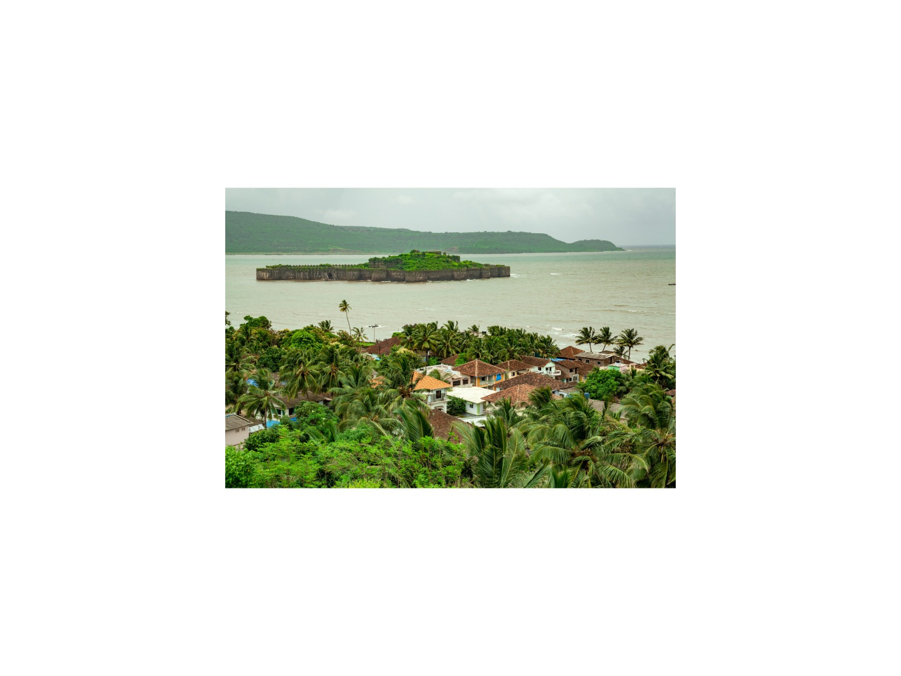
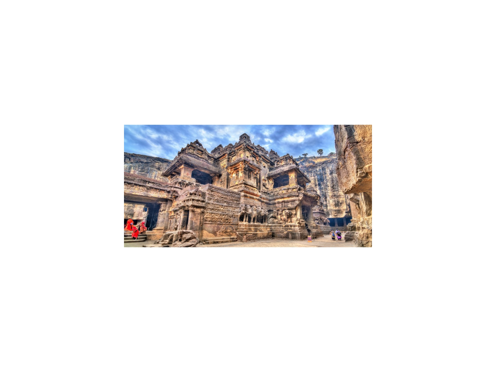
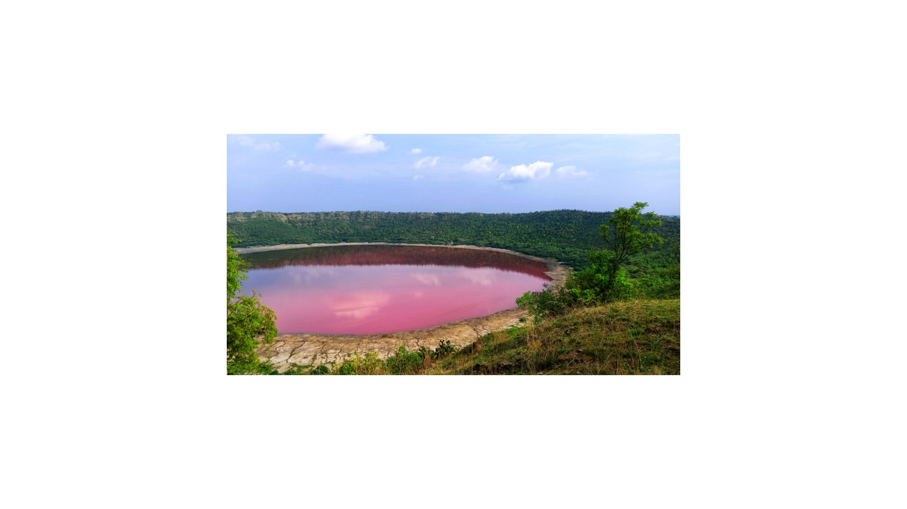
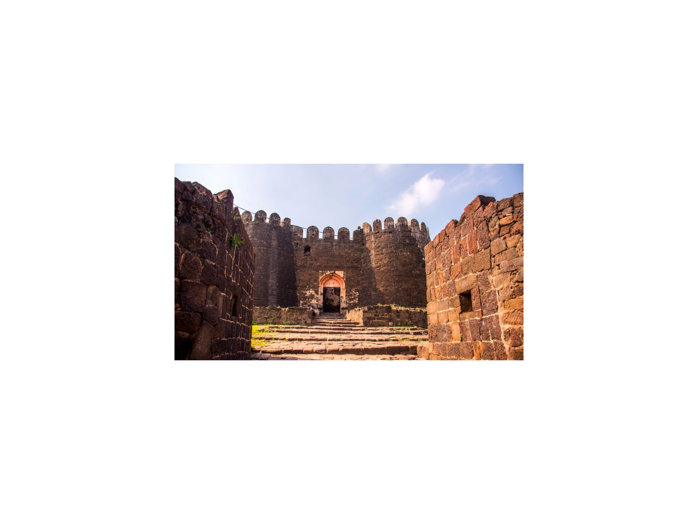
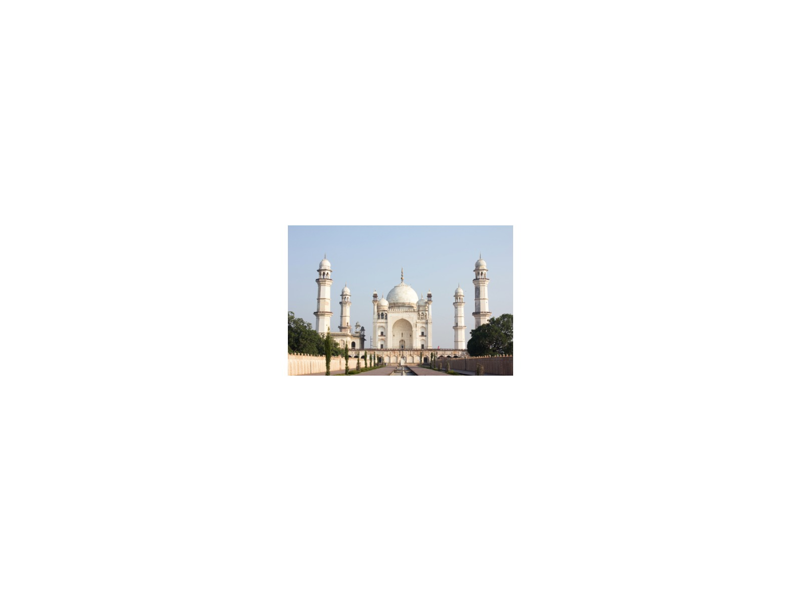
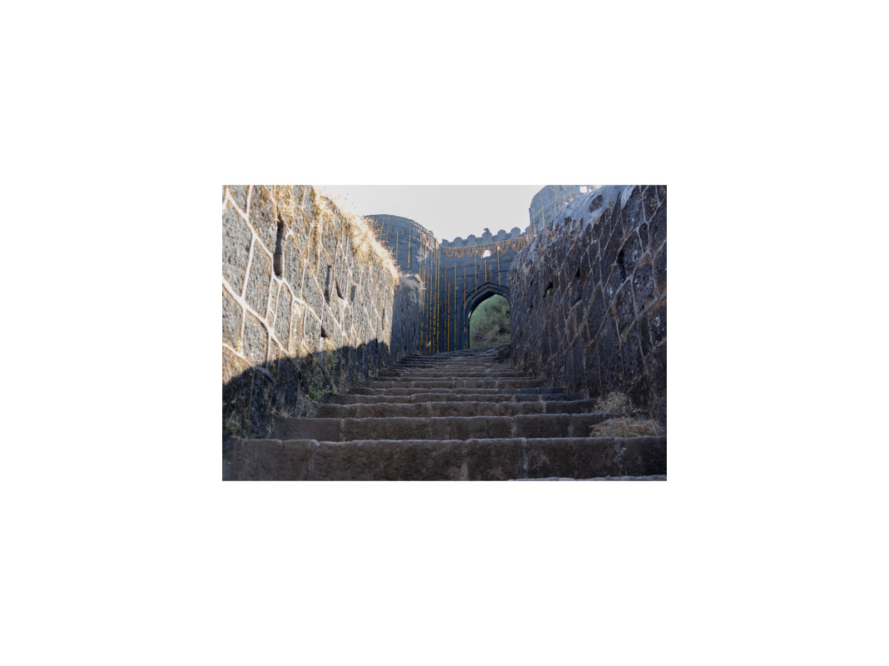
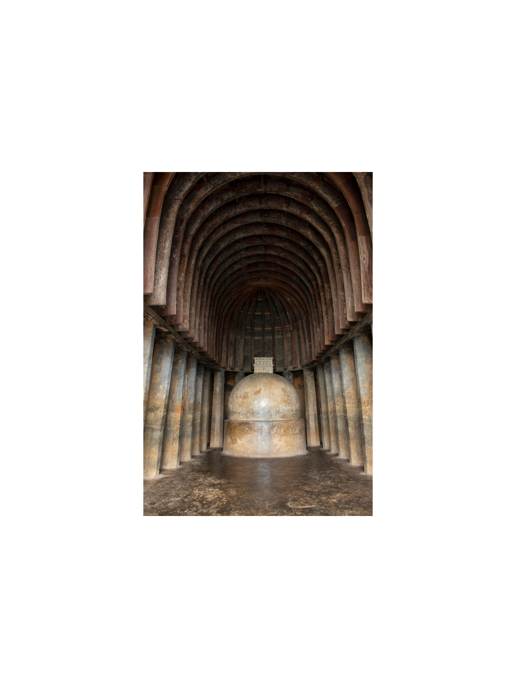
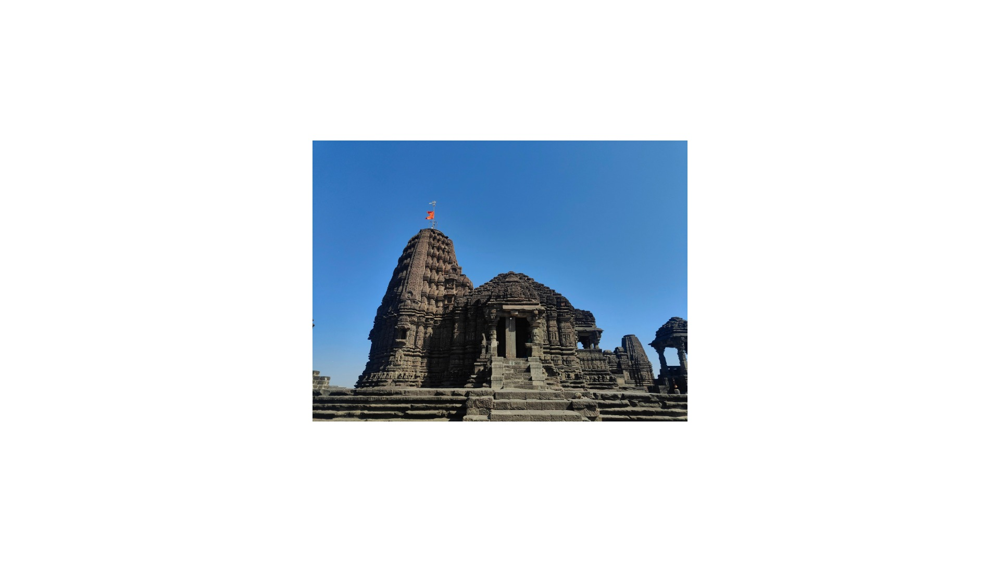
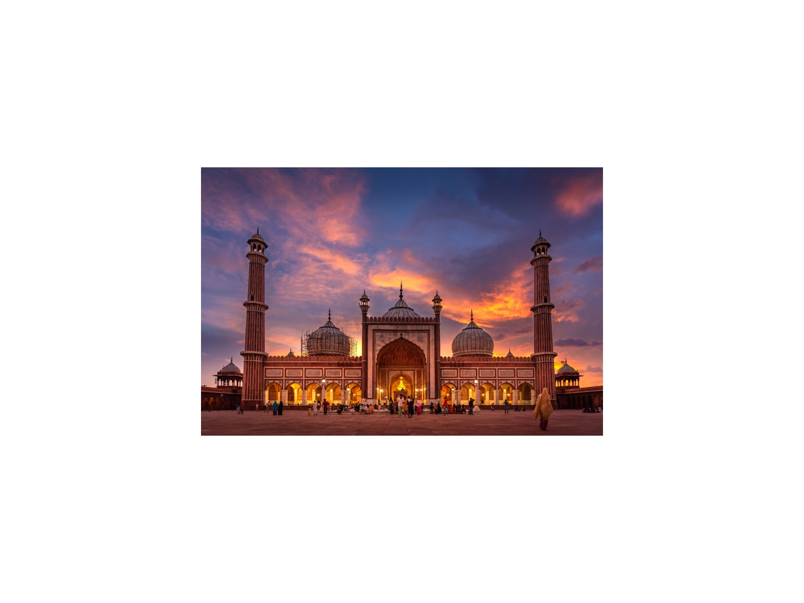

13 дней: империи Сахьядри — морские форты, пещерные храмы и метеоритный кратер
Мумбаи · Элефанта · Алибаг · Мурад · Махад · Райгад · Лонавала · Пуна · Нашик · Даулатабад · Хулдабад · Аурангабад · Эллора · Аджанта · Лонар
О путешествии
Морские форты, цитадель Шиваджи, пещеры Аджанты и Эллоры и метеоритный кратер Лонар — тринадцать дней по Махараштре.
Комфортный ритм, время на каждом объекте.
Главное
- Морской форт Муруд-Джанджира и горная цитадель маратхов Райгад
- Пещеры Аджанта и Эллора (ЮНЕСКО), храм Кайласа
- Метеоритный кратер Лонар и руины храмов
- Форт Даулатабад, пещеры Элефанта и Биби-ка-Макбара
Маршрут и программа по дням
Схематичный маршрут, не в масштабе.
День 1Прибытие в Мумбаи
Обзорная экскурсия по главным символам города и колониальной архитектуре Мумбаи. Ночь в Мумбаи.
День 2Пещеры Элефанты и дорога вдоль Конканского побережья
Утренний паром к пещерам Элефанты (ЮНЕСКО). Переезд на юг вдоль Конканского побережья в Муруд (около 4–5 часов; в качестве альтернативной базы возможен Алибауг). Ночь в Муруде.
День 3Морской форт Мурад-Джанджира
Переправа на парусной лодке к неприступному островному форту Мурад-Джанджира (в сезон муссонов лодки обычно не ходят); осмотр 15-метровых стен, скрытых главных ворот и пресных источников. Переезд в Махад (около 2,5 часов). Ночь в Махаде.
День 4Горная столица маратхов Райгад и переезд в Лонавалу
Подъём по канатной дороге на плато форта Райгад (зал царского совета, обрыв Такмак Ток). Во второй половине дня — переезд в Лонавалу (около 4 часов). Ночь в Лонавале.
День 5Пещеры и крепости Лонавалы
Осмотр скальных буддийских монастырей Карла и Бхаджа, а также укреплений форта Лохагад. Ночь в Лонавале.
День 6Лонавала — Пуна
Экскурсия по дворцу-крепости Шанивар-вада, пещерному храму Паталешвар и дворцу Ага-Хана. Ночь в Пуне.
День 7Пуна — Нашик
Посещение буддийских пещер Пандавлени и храма Тримбакешвар (джьотирлингам). Ночь в Нашике.
День 8Нашик — Аурангабад через форт Даулатабад
Осмотр оборонительных сооружений форта Даулатабад и посещение Хулдабада. Ночь в Аурангабаде.
День 9Пещеры Эллоры и храм Кайласа
Экскурсия по пещерам Эллоры (монолитный храм Кайласа) и мавзолею Биби-ка-Макбара. Ночь в Аурангабаде.
День 10Экскурсия в пещеры Аджанты
Полный день в ущелье Аджанты: скальные монастыри и древние буддийские фрески. Ночь в Аурангабаде.
День 11Аурангабад — метеоритный кратер Лонар
Переезд к кратеру Лонар. Спуск в плейстоценовый метеоритный кратер к озеру и осмотр старинных храмов династии Чалукья среди руин. Ночь в Лонаре или Джальне.
День 12Утро у кратера Лонар и возвращение в Аурангабад
Утренняя прогулка по кромке кратера, наблюдение за птицами и осмотр окрестных памятников. Во второй половине дня — возвращение в Аурангабад. Ночь в Аурангабаде.
День 13Вылет / отъезд
Трансфер в аэропорт или на вокзал Аурангабада (дальнейший проезд не включён).
Лучшее время для поездки
Лучшее Возможно Нежелательно
Лучшее время: окт–фев. Также подходит: мар.
Октябрь — февраль — прохладная погода, идеальная для пещер и фортов. Сезон дождей (июнь — сентябрь) делает Сахьядри зелёными, но может нарушить сообщение с морскими фортами и некоторые поездки в пещеры. Лодки к форту Мурад-Джанджира обычно не ходят в сезон дождей.
Что включено
Включено
- Частный автомобиль с кондиционером и водителем
- Лицензированный гид (русский или английский)
- Входные билеты в памятники
- Отели (12 ночей)
Не включено
- Авиабилеты
- Питание, если не указано
- Чаевые и личные расходы
- Туристическая страховка
Ориентировочно; точный состав подтверждается в вашем персональном расчёте.
Полезно знать
- Элефанта и Аджанта закрыты по понедельникам, Эллора — по вторникам.
- Лодки к форту Мурад-Джанджира обычно не ходят в сезон дождей (примерно с июня по сентябрь).
Места этого маршрута

Храм Кайласа в Эллоре
Кратер Лонар
Форт Даулатабад Пещеры Элефанта
Пещеры Элефанта
Биби-ка-Макбара
Форт Райгад
Пещеры Карла Форт Лохагад
Форт Лохагад Шанивар-вада
Шанивар-вада Пещерный храм Паталешвар
Пещерный храм Паталешвар Дворец Ага-Хана
Дворец Ага-Хана Пещеры Пандавлени
Пещеры Пандавлени
Храм Тримбакешвар Пещеры Аджанты
Пещеры АджантыВопросы
Это частное путешествие?
Да. Каждое путешествие — только для вас и ваших спутников, с личным гидом, автомобилем и водителем. Никаких групп и сборных туров.
Можно ли изменить маршрут?
Да. Эта программа — отправная точка. Расскажите об интересах, темпе и датах, и я скорректирую маршрут до расчёта стоимости.
На каких языках проводятся туры?
Викрамджит проводит экскурсии на русском и английском.
Насколько тур физически сложный?
Комфортный ритм, время на каждом объекте. Оценка темпа: умеренный темп.
Как забронировать и когда я узнаю цену?
Отправьте запрос с датами. В течение 24 часов вы получите персональную программу и расчёт стоимости.
Темы
Наследие Декана и скальных храмов Маршрут Всемирного наследия ЮНЕСКО Королевские крепости и цитадели Дикая природа и эко-сафари
Направления
Мумбаи и побережье Конкан Пуна и Нашик Аурангабад, Эллора и Аджанта
Похожие путешествия
 1 день
1 деньОднодневный частный тур из Дели: Тадж-Махал и форт Агры
Утренний свет на Тадж-Махале и красные дворики форта Агры за один частный день из Дели — с личным гидом и автомобилем.
Подробнее →
1 деньДели за один день: имперская столица и духовное наследие
Старый Дели, могольские мавзолеи и святыни трёх религий — в вашем темпе за один частный день.
Подробнее → 1 день
1 деньДжайпур за один день: частный королевский экспресс из Дели
Форт Амбер, Городской дворец и главные места Розового города за один долгий день из Дели — для тех, у кого есть всего один день.
Подробнее →